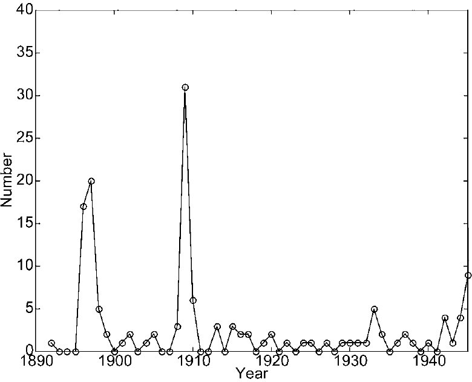
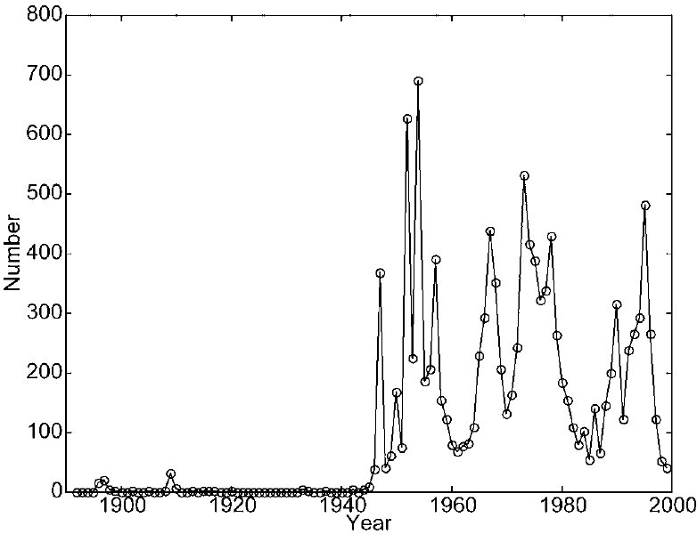
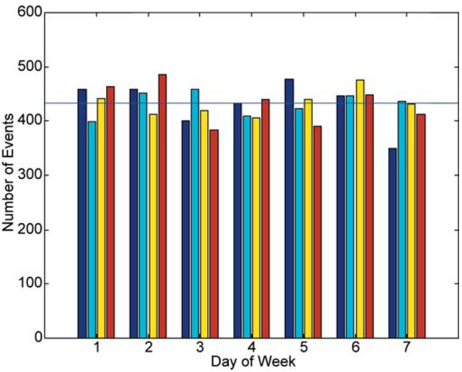
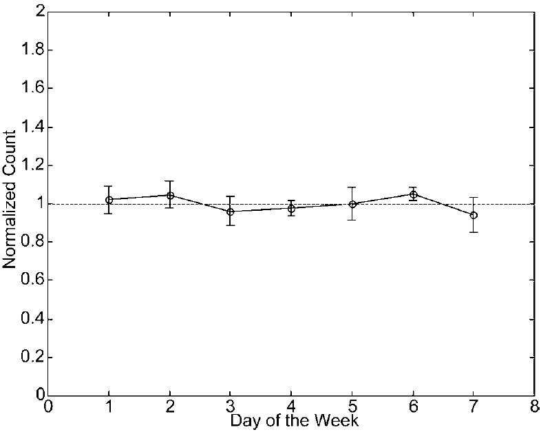
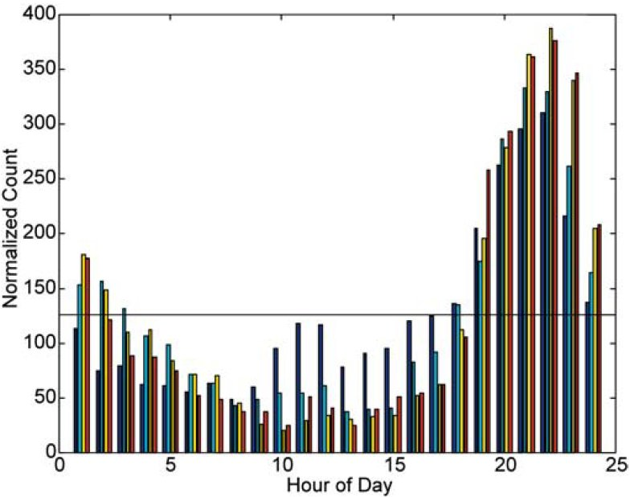
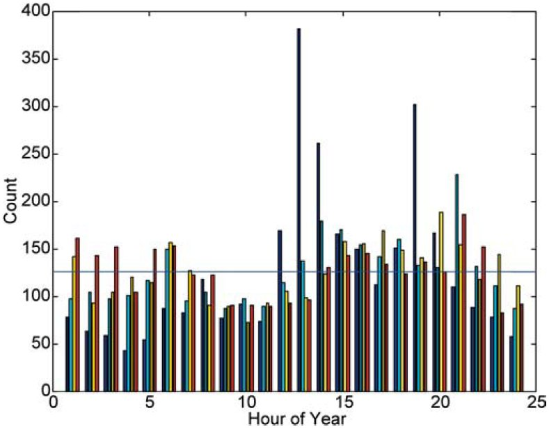

<!--#include virtual="/header-start.html" -->
<title>Time-Series Analysis of a Catalog of UFO Events: Evidence of a Local-Sidereal-Time Modulation</title>
<meta content="Sturrock, Peter A." name="author"/>
<meta content="Center for Space Science and Astrophysics, Stanford University, MC 4060, Stanford, CA 94305"
    name="copyright"/>
<!--#include virtual="/header-end.html" -->
<p class="abstract"> Analysis of a large database may yield patterns that are not obvious by studying individual cases.
  We here carry out a time-series analysis of a selection of the 1999 version of the Hatch UFO catalog, comprising
  12,100 events, for which geographical and temporal data are well established. We compare our results with those of
  earlier analyses by Poher and Vallee on smaller datasets, and confirm that the event rate exhibits a modulation
  related to local sidereal time (LST). Such a modulation could in principle be simply a spurious effect due to the
  combined influence of a strong time-of-day modulation, and an expected time-of-year modulation. However, we develop a
  test to distinguish such a spurious pattern from an intrinsic pattern. This test indicates that the LST modulation is
  intrinsic.</p>
<section>
  <h2> Introduction</h2>
  <p> The UFO problem?that of understanding the cause of causes of UFO reports?is extraordinarily complicated. Many
    thousands of reports have been filed and investigated by the US Air Force (projects Sign, Grudge, and Blue Book),
    the French project SEPRA (first known as "GEPAN"), and more recently by projects in Brazil, Chile, Peru, and
    Uruguay. In addition, many thousands of reports have been filed by non-governmental organizations such as APRO,
    NICAP, and MUFON in the United States, and similar organizations in other countries. A brief guide to the extensive
    literature on this subject is given in Sturrock (1999, p. 381). The reader may learn of the early history from
    Jacobs (1975), and form some idea of the complexity of the subject from three encyclopedias (Clark, 1998; Sachs,
    1980; Story, 1980).</p>
  <p> It is significant that this complex problem has received scant attention from the scientific community. Possible
    reasons for this lack of interest were considered by a panel, convened by Mr. Laurance S. Rockefeller, that met at
    Pocantico, New York, in September 1997 (Sturrock, 1999: 153). It appears that one major reason for this lack of
    curiosity is the belief that the Air-Force-funded Colorado Project, which led to the "Condon Report" (Condon &amp;
    Gillmor, 1969), established that there is no significant content to the problem. A panel set up the National Academy
    of Sciences to review the Condon Report gave the report a clean bill of health (Clemence et al., 1969), when there
    is much in the report to be criticized (Sturrock, 1987). For instance, Condon's summary of the project is seriously
    at odds with the case studies and summaries of the Project staff.</p>
  <p> However, a great deal of data has been collected since the Condon Report, and much of these data have been
    compiled in the form of computer-readable catalogs. Probably the first computerized catalog of UFO cases was
    developed by Dr. Jacques Vallee in the 1960s. Since that time, other catalogs have been developed, including notably
    UFOCAT, originally compiled by Dr. David Saunders as part of his work for the Colorado Project, and more recently
    developed by Don Johnson for the Center for UFO Studies (CUFOS); UNICAT, compiled by Dr. Willy Smith; AIRCAT, a
    catalog of aircraft cases compiled by Dr. Richard F. Haines; and the *U* Database compiled by Larry Hatch (1999). We
    have concentrated on the *U* database, since Hatch has kindly made his data available in a form convenient for
    analysis.</p>
  <p> In the scientific study of any phenomenon, the theoretical challenge is to explain experimental or observational
    facts. In order to determine these facts, we need to identify consistent patterns in the data, and then establish
    that these patterns are intrinsic to the phenomenon, and not simply a product of the data acquisition and
    compilation processes. Poher (1973), in a seminal report, analyzed a dataset of French UFO cases and a dataset of
    other worldwide cases, and established that a number of patterns are identical in both datasets. Poher and Vallee
    (1975) carried out a crucial extension of this analysis by combining and comparing the Poher catalog with that
    compiled independently by Vallee. These studies indicated that there are indeed consistent patterns in UFO
    data. </p>
  <figure class="right side">
    
    <figcaption>Figure 1 - Number of events per year in selected database from 1890 to 1945</figcaption>
  </figure>
  <p>The purpose of this article is to extend the analyses of Poher and Vallee by analyzing the Hatch catalog, which is
    much more extensive and has been compiled independently of the compilations of Poher and Vallee. However, as a first
    step in this catalog analysis, we restrict the scope of this article to timeseries analysis. Perhaps the most
    intriguing result of the time-series aspects of the Poher-Vallee analyses was the strong suggestion that the rate of
    occurrence of UFO events depends upon local sidereal time (LST). For this reason, the main focus of our present
    analysis is to determine whether analysis of the more extensive Hatch catalog confirms this pattern in the Poher and
    Vallee catalogs and, if so, to try to determine whether this pattern is intrinsic to the phenomenon, or extrinsic in
    the sense that it may be attributed to other known and understood properties of the dataset. </p>
  <p>In Section 2, we analyze the rate of UFO events on a historical time-scale, by day of the week, by time of day, and
    by time of year. In Section 3, we carry out a power spectrum analysis and find a notable peak at 1y<sup>-1</sup>
    (one cycle per year). Clearly, this may simply reflect a yearly variation that has a meteorological and/or
    sociological origin, but it may have an astronomical cause. In order to distinguish these two possibilities, we
    carry out a "running-wave" spectrum analysis in Section 4. This analysis clearly indicates that the variation has an
    astronomical origin. We carry out a significance test in Sections 5, and we examine the event rate as a function of
    LST in Section 6. We analyze two simulated test cases in Section 7, and give a brief discussion of these results in
    Section 8.</p></section>
<section>
  <h2> Basic Patterns</h2>
  <figure class="left side">
    <figcaption>Fig. 2. Number of events per year in selected database from 1890 to 1999.</figcaption>
    
  </figure>
  <p>Hatch kindly selected from his 1999 database a list of 12,100 cases for which the latitude, longitude, date, and
    time were known. We refer to each case as an "event", leaving open the nature of the event or, indeed, whether the
    event really occurred or was a hoax or misperception of a well known object or phenomenon. The number of events is
    shown, as a function of year, in Figure 1 for 1890 to 1945, and in Figure 2 for 1945 to 1999. The cumulative count
    for 1890 to 1999 is shown in Figure 3. We see that there were only a few events before 1945, and there was a sharp
    onset in 1946. The peak at 1896 to 1897 may be part of the"airship" wave (see, for instance, Clark, 1998:46), and
    the peak at 1909 may be part of the "phantom aircraft" wave. Although the event rate has varied greatly from year to
    year since 1945, it is clear from Figure 3 that there was a very sharp increase in 1946. That was the year of the
    Kenneth Arnold report (see, for instance, Clark, 1998:139), which received worldwide attention and initiated the
    current "flying saucer" wave.</p>
  <p> We now wish to examine the event rate by day of week, etc. We could take the entire database and form the
    histogram by day of week, etc. However, we wish to know whether there is any consistent pattern in the phenomenon,
    as compared with a pattern that comes and goes. We have therefore divided the database into four time intervals A,
    B, C, and D, listed in Table 1, that contain equal numbers of events we refer to as "blocks."</p>
  <figure class="right side">
    <figcaption>TABLE 1 - Periods Covered by the Four Time-Blocks</figcaption>
    <table>
      <tr>
        <td colspan="6">
          <hr>
        </td>
      </tr>
      <tr>
        <td> A<br> <br></td>
        <td>March</td>
        <td>1892</td>
        <td>to</td>
        <td>November</td>
        <td> 1957</td>
      </tr>
      <tr>
        <td>B</td>
        <td>November</td>
        <td>1957</td>
        <td>to</td>
        <td>March</td>
        <td>1973</td>
      </tr>
      <tr>
        <td>C</td>
        <td>March</td>
        <td>1973</td>
        <td>to</td>
        <td>August</td>
        <td>1982</td>
      </tr>
      <tr>
        <td>D</td>
        <td>August</td>
        <td>1982</td>
        <td>to</td>
        <td>November</td>
        <td>1999</td>
      </tr>
      <tr>
        <td colspan="6">
          <hr>
        </td>
      </tr>
    </table>
  </figure>
  <p>Histograms according to day of the week, for the four time-blocks, are shown in Table 1, in which we also list the
    mean and standard deviation for each day of the week. The histograms are also shown in Figure 4. It is clear from
    this figure that there is little evidence for a day-of-the-week pattern. We may check this conjecture by means of
    the familiar chi-square test. We form the statistic</p>
  <table>
    <tr>
      <td></td>
      <td>
        <div>K</div>
      </td>
      <td>
        <div>(n<sub>k</sub> - n<sub>k</sub>(exp))<sup>2</sup></div>
      </td>
      <td></td>
      <td></td>
    </tr>
    <tr>
      <td>&chi;<sup><sup></sup>2</sup> =</td>
      <td>
        <div>&Sigma;</div>
      </td>
      <td>
        <hr>
      </td>
      <td></td>
      <td>, (2.1)</td>
    </tr>
    <tr>
      <td></td>
      <td>
        <div>k=1</div>
      </td>
      <td>
        <div>&sigma;<sub>k</sub><sup>2</sup></div>
      </td>
      <td></td>
      <td></td>
    </tr>
  </table>
  <p>where k enumerates days of the week, nk is the mean count, and rk is the standard deviation of the count, for each
    day of the week. </p>
  <figure class="right side">
    <figcaption>
      Fig. 4. Day-of-week histograms for the four time blocks A-D. The horizontal line is the mean value.
    </figcaption>
    
  </figure>
  <p>If we consider the hypothesis that each event is independent of all other events, and can occur on any day of the
    week with uniform probability, then the appropriate choice for n<sub>k</sub>(exp) is 12,100/7, i.e. 1,729, and the
    appropriate choice for &sigma;<sub>k</sub> is sqrt(1729), i.e. 41.6. For this case, Equation 2.1 gives
    &chi;<sup><sup></sup>2</sup> = 18.1. For 6 degrees of freedom, the probability of obtaining this large a value of
    &chi;<sup>2</sup> or more by chance is 0.006. Hence the hypothesis may be rejected, but not by overwhelming
    evidence.
  </p>
  <p> We now look to see if there is any pattern in the data that appears consistently throughout the database. We
    investigate this question by evaluating the chi-square statistic using the experimental data of Table 2. We evaluate
    &chi;<sup><sup></sup>2</sup> using data from columns 7 and 8 in Equation 2.1: if the pattern is consistent, and the
    scatter in count rate is smaller than the deviation of the count rate from its expected value, then we will expect
    to obtain a large value of &chi;<sup><sup></sup>2</sup> (for the given number of degrees of freedom). On the other
    hand, if the count rate varies substantially from block to block, so that the scatter is as large as or larger than
    the departure from the expected rate, then we will expect &chi;<sup><sup></sup>2</sup> to be small.</p>
  <figure class="left side">
    <figcaption>
      Fig. 5. Mean and standard deviation for number of events per day per block. The horizontal line is the mean value.
    </figcaption>
    
  </figure>
  <p> We show data from columns 7 and 8 in Figure 5, which give no obvious evidence for a consistent departure from the
    uniform distribution. We find that
    &chi;<sup><sup></sup>2</sup> = 3.93. For 6 degrees of freedom, there is a probability of 0.39 of obtaining this
    large a value or more by chance. Hence, as expected, this test confirms that there is no evidence for a consistent
    departure from uniformity with respect to day of the week.</p>
  <p> We have carried out a similar analysis to study the variation of event rate with hour of the day. The
    corresponding histograms are shown in Figure 6. It is obvious that there is a huge variation, which is fairly
    consistent among timeblocks, of the count by time of day. The minimum is at about mid-day, and the maximum at about
    10 pm. The variation is so large that a chi-square test is redundant. (The actual value of
    &chi;<sup><sup></sup>2</sup> is 684.) The same data are shown as an errorbar display in Figure 7. </p>
  <figure class="right side">
    <figcaption>
      Fig. 6. HOD histograms for the four time blocks A-D. The horizontal line is the mean value.
    </figcaption>
    
  </figure>
  <p>It is convenient to carry out an analysis of time-of-year variation similar to our analysis of time-of-day
    variation. We have therefore divided the year into 24 equal parts (taking time of day into account) of about 15.22
    days each. We refer to these divisions as "hours of year" (HOY) and ordinary hours as "hours of day" (HOD). The
    histograms are shown in Figure 8, and the error-bar display in Figure 9. This dataset also leads to a very large
    value of the chi-square statistic (122.7), confirming what is obvious from the plots that there is a significant and
    fairly consistent variation in the count rate with time of year. There is a minimum around May and a broad maximum
    around September.</p></section>
<section>
  <h2> Power Spectrum Analysis</h2>
  <figure class="left side">
    <figcaption>
      Fig. 7. Mean and standard deviation of the number of events per hour per block. The horizontal line is the mean
      value.
    </figcaption>
    
  </figure>
  <p> In any investigation of a time series, power spectrum analysis can be informative. Perhaps the simplest procedure
    for a large but irregular time series is to form the "Schuster periodogram" or "Rayleigh power" (Bretthorst, 1988;
    Mardia, 1972), which is given by </p>
  <table>
    <tr>
      <td></td>
      <td>
        <div>1</div>
      </td>
      <td bgcolor="#333333" width="1"></td>
      <td>
        <div>N</div>
      </td>
      <td></td>
      <td bgcolor="#333333" width="1"></td>
      <td><sup>2</sup></td>
    </tr>
    <tr>
      <td>S<sub>R</sub>(v) =</td>
      <td>
        <hr>
      </td>
      <td bgcolor="#333333" width="1"></td>
      <td>
        <div>&Sigma;</div>
      </td>
      <td>e<sup>i2&pi;vt<sub>n</sub></sup></td>
      <td bgcolor="#333333" width="1"></td>
      <td>, (3.1)</td>
    </tr>
    <tr>
      <td></td>
      <td>
        <div>N<sup></sup></div>
      </td>
      <td bgcolor="#333333" width="1"></td>
      <td>
        <div>n=1</div>
      </td>
      <td></td>
      <td bgcolor="#333333" width="1"></td>
      <td></td>
    </tr>
  </table>
  <figure class="right side">
    <figcaption>Fig. 8. Histograms formed from HOY for the four time blocks A-D.</figcaption>
    
  </figure>
  <p>where tn is the time of event n, N is the total number of events, and m is the frequency. The power spectrum as
    computed from this formula is shown for frequencies in the range 0 to 5y<sup>-1</sup> in Figure 10. We see that,
    apart from the unavoidable strong peak near zero frequency, there are two notable peaks, one at 0.42y<sup>-1</sup>
    with S = 308, and the other close to 1y<sup>-1</sup> with S = 297. The former has no obvious significance, but the
    latter is most likely related to the calendar year. It may have a purely calendar origin, due to the variation of
    the event rate during the year (as shown in Figure 8), but it could conceivably have an astronomical origin, since
    some fraction of UFO reports may be due to the misperception of celestial objects. </p>
  <figure class="left side">
    <figcaption>Fig. 9. Mean and standard deviation of the number of events per HOY per block. The horizontal line is
      the mean value.
    </figcaption>
    
  </figure>
  <p>If the events were independent, <em>S</em> would have an exponential distribution such that the probability of
    obtaining a power S or more would be e<sup>-<em>S</em></sup>. However, events appear to be highly correlated,
    occurring in bunches, so we may not interpret the power spectrum in this way. We find that in the frequency range 0
    to 10y<sup>-1</sup>, there are 390 peaks. A semi-logarithmic display of the cumulative distribution of these peaks
    is shown in Figure 11. We see that, except for the 10 to 15 strongest peaks, the cumulative distribution is close to
    exponential. We find that if we "normalize" the Rayleigh power as follows,</p>
  <p><em>S</em> = <em>S</em><sub>R</sub>/25, (3:2)</p>
  <figure class="right side">
    <figcaption>Fig. 10. Rayleigh power spectrum.</figcaption>
    
  </figure>
  <p>the cumulative distribution of the normalized power satisfies</p>
  <p> P(<em>S</em> &gt; <em>S</em><sub>0</sub>) &cong;
    e<sup>-<em>S</em><sub>0</sub></sup></p>
  <p> for most of the range. Hence the power at 1y<sup>-1</sup> corresponds to a "normalized" power S = 12. The
    probability of obtaining this power or more would be about 6 10<sup>-6</sup>.</p>
  <h2> Running-Wave Power Spectrum Analysis</h2>
  <figure class="left side">
    <figcaption>Fig. 11. Cumulative distribution of powers computed from Equation 3.1.</figcaption>
    
  </figure>
  <p>In the previous section, we looked into the possibility that the event rate contains one or more oscillations in
    time. In this section, we ask a different but related question. We look into the possibility that the event rate
    exhibits a significant pattern in terms of a rotating reference frame. We know that if the frame rotates with
    respect to the Earth with a one-day rotation period, there is a very strong modulation, shown in Figures 6 and 7. If
    it were to turn out that many events are due to observations of the planet Jupiter, then one would expect to find a
    significant pattern in terms of a frame that has the same mean rotation rate that Jupiter has with respect to the
    Earth.</p>
  <p> It is convenient to take as our basic reference frame one in which the Sun has a fixed location. With respect to
    an observer on Earth, this frame rotates with a period of one day. With respect to an observer on a nearby star,
    this frame rotates with a period of one year. With respect to this basic frame, Jupiter rotates with a period of
    398.88 days (Jupiter's synodic period).</p>
  <p> We denote by &Phi;<sub>n</sub> the angular position of the zenith (the position looking vertically upward) for
    event n, but normalize the angle to run from 0 to 1:</p>
  <p>&Psi; = &Phi;/2&pi;. (4.1)</p>
  <p> This quantity is related the hour of day of the event by</p>
  <p>&Psi; = (HOD)/24</p>
  <p>We now denote by m the angular velocity of the test frame with respect to the basic (Sun-locked) frame, where m is
    measured in cycles per year. Then we can evaluate the possibility that events "cluster" with respect to the test
    frame by forming the following form of the Rayleigh power:</p>
  <p> S&eth;m&THORN; = <br> 1<br> NX N<br> n=1<br> exp&frac12;i2p&eth;wn &thorn;
    mtn&THORN; <br> <br> 2<br> ; &eth;4:3&THORN;</p>
  <p> where t is to be measured in years.</p>
  <p> We note that m = 0 corresponds to the Sun-locked frame and m = 1y<sup>-1</sup> corresponds to the star-locked
    frame, for which the combination w&thorn;mt has a well known astronomical interpretation. If t is measured from 0
    hours on January 1 of some year, then t (in y1) is related to the "hour of year" introduced in Section 2 by</p>
  <p> t&eth;mod 1&THORN; = &eth;HOY&THORN;=24: &eth;4:4&THORN;</p>
  <p>We see from Equations 4.2 and 4.4 that the combination w&thorn;mt is related to the sum of HOD and HOY. This
    combination is related to LST by the equation</p>
  <p> LST = HOD &thorn; HOY &thorn; 6:67: &eth;4:5&THORN;</p>
  <p> We noted in Section 3 that there appears to be a modulation of the event rate with period 1 year. This annual
    variation may of course be due to a seasonal variation in hours of daylight, social patterns, atmospheric
    conditions, etc. The interplay of an annual modulation and the strong daily modulation shown in Figures 6 and 7
    would lead to a combined effect that may be written schematically as a probability distribution function (pdf) given
    by</p>
  <p> P&eth;HOD;HOY&THORN; = P&eth;HOD&THORN;P&eth;HOY&THORN;; &eth;4:6&THORN;</p>
  <p> where P(HOD) and P(HOY) are the pdf's for events in terms of HOD and HOY, respectively. Since each pdf is
    periodic, with period 24, the simplest modulations are of the form</p>
  <p> P&eth;HOD&THORN; = 1 &thorn; D sin 2p<br> HOD<br>  24 &thorn; vD &eth;4:7&THORN;<br> and<br> P&eth;HOY&THORN;
    = 1 &thorn; Y sin 2p<br> HOY<br>  24 &thorn; vY:
    &eth;4:8&THORN;</p>
  <p> We see that Equation 4.6 now yields</p>
  <p> P&eth;HOD;HOY&THORN; = 1 &thorn; D sin 2p<br> HOD<br>  24 &thorn; vD&thorn;
    Y sin 2p<br> HOY<br>  24 &thorn; vY<br>
    &thorn;<br> 1<br> 2<br> DY cos 2p<br> HOD<br> 24 &thorn; vD  2p<br> HOY<br>  24  vY<br> cos 2p<br> HOD<br>
    24
    &thorn; vD &thorn; 2p<br> HOY<br>  24
    &thorn; vY &eth;4:9&THORN;</p>
  <p> leading to a term that is a function of the LST and another term, of exactly the same amplitude, that is a
    function of the quantity</p>
  <p> ALST = HOD  HOY &thorn; 6:67; &eth;4:10&THORN;</p>
  <p> which we refer to as the "Alias Local Sidereal Time" (ALST). If the Rayleigh power defined by Equation 4.3 leads
    to a power spectrum with two equal peaks at m = 1y<sup>-1</sup> and at m=1y<sup>-1</sup>, we may infer that the
    annual modulation found in the analysis of Section 3 was due simply to the seasonal effect. But if we find that
    there is a strong peak at m = 1y<sup>-1</sup>, and no peak?or only a weak peak?at m=1y<sup>-1</sup>, we may infer
    that the annual modulation has some kind of astronomical origin.</p>
  <p> The power spectrum in terms of normalized power is shown for frequencies in the range 5 to 5y<sup>-1</sup> in
    Figure 12, in which the powers for positive frequencies are shown as positive quantities, and the powers for
    negative frequencies are shown as negative quantities. Ignoring the inevitable large peak at zero Fig. 12.
    Running-wave power spectrum, forward waves shown with positive power, and reverse waves shown with the negative of
    the power frequency, we see that there are significant peaks at or near m = 1y<sup>-1</sup> (S = 125)<br> and m = 2y<sup>-1</sup>
    (S = 77). At exactly m = 1y<sup>-1</sup>, S = 102, and at exactly m = 2y<sup>-1</sup>,<br> S=75. By contrast, at
    exactly m=1y<sup>-1</sup>, S=3.5, and at exactly m=2y<sup>-1</sup>, S=8.5.</p>
  <p> A semi-logarithmic display of the cumulative distribution of peaks for the frequency range10 to 10y<sup>-1</sup>
    is shown in Figure 13. We again find that, except for a few peaks, the cumulative distribution is close to
    exponential. If we"normalize" the Rayleigh power as follows,</p>
  <p>S = SR=7; &eth;4:11&THORN;</p>
  <p>the cumulative distribution of the normalized power satisfies</p>
  <p> P&eth;S . S0&THORN;'eS0 &eth;4:12&THORN;</p>
  <p> for most of the range. Hence the peak near m &frac14; 1y1 for the forward wave corresponds to a normalized power
    of 17.9; the probability of obtaining this power or higher is about 1.7 108. The peak near m=2y1 for the forward
    wave corresponds to a normalized power of 11.0; the probability of obtaining this power or higher is about 1.7 105.<br>
    Since the power spectrum computed from Equation 4.3 is not symmetric in positive and negative frequencies, it
    appears not to be due to the interplay of the HOD and HOY modulations. The asymmetry indicates that there is a
    modulation in terms of LST. It is not unreasonable that the modulation should show up at m = 2y1 as well as at m =
    1y1, since Equations 4.7 and 4.8 represent only the simplest approximations to the pdfs, and more accurate
    approximations must be<br> expected to contain terms of higher order.</p>
  <p> Fig. 13. Cumulative distribution of powers computed from Equation 4.3.</p>
  <h2> Test of LST Peaks in Running-Wave Spectrum</h2>
  <p> We saw that the distribution of peak powers differs significantly from the form in Equation 4.12 to be expected of
    independent random variables. This is because, as mentioned earlier, consecutive counts of events are highly
    correlated,<br> since events arrive in "bunches." Hence we need a more reliable procedure for obtaining significance
    estimates.<br> A convenient method of obtaining robust significance estimates is the "shuffle test." We retain the
    actual lists of times of events and of times of day of events, but we randomly reassign members of one list to
    members of the other list. For each<br> such "shuffle," we compute the power using Equation 4.3. We may then
    determine the fraction of shuffles for which the power exceeds any specified value.<br> We have carried out this
    procedure for both m=1y<sup>-1</sup> and m=2y<sup>-1</sup>, for 10,000 Fig. 14. Results of a test of 10,000 shuffles
    for m = 1y<sup>-1</sup> showing (thick line) the logarithm of the fraction of trials that give a power exceeding a
    value shown in the abscissa. The thin line is the curve computed from Equation 5.2. The asterisk shows the actual
    power</p>
  <p> (S = 102.3) for m = 1y<sup>-1</sup>.</p>
  <p>TABLE 2<br> Histogram Data for Breakdown by Day of the Week<br> A B C D Total Mean SD<br> Sunday 459 399 441 464
    1763 440.75 29.53<br> Monday 458 452 412 486 1808 452.00 30.51<br> Tuesday 400 459 420 384 1663 415.75 32.38<br>
    Wednesday 433 409 405 440 1687 421.75 17.35<br> Thursday 478 423 440 390 1731 432.75 36.62<br> Friday 447 446 476
    449 1818 454.50 14.39<br> Saturday 350 437 431 412 1630 407.50 39.79
  </p>
  <p> shuffles each. We show in Figure 14 the log of the fraction (ordinate) of simulations for m=1y<sup>-1</sup> that
    have power in excess of the value shown in the abscissa. We find that this curve is similar in shape to that of the
    "false alarm" probability discussed by Scargle (1982). For M independent trials, each corresponding to a power
    spectrumanalysis of independent normally distributed data, for which the power spectrum is known to be exponential,
    Scargle shows that the probability that the maximum of the M powers exceeds a given value S is given by
  </p>
  <p> P = 1  &eth;1  eS&THORN;M: &eth;5:1&THORN;</p>
  <p> We find that, if we generalize this formula to</p>
  <p> P = 1  &eth;1  eaS&THORN;M; &eth;5:2&THORN;</p>
  <p>we get a good fit to the results of the shuffle operation for the case m=1yr<sup>-1</sup> with the values M =
    10,000 and a = 0.23. This fit enables us to extend the results of the shuffle test. From this extrapolation, we find
    that the shuffle test indicates that the probability of obtaining a power of 102 or more is 10<sup>-6</sup>.19, i.e.
    6.5 10<sup>-7</sup>.<br> We have repeated these calculations for m=2yr<sup>-1</sup>. We show in Figure 15 the log of
    the fraction (ordinate) of simulations for m = 2yr<sup>-1</sup> that have power in excess of the value shown in the
    abscissa. We get a good fit to the results of the<br> shuffle operation for the case m
    &frac14;
    2yr<sup>-1</sup> with the values M = 13 and a = 0.425.</p>
  <p> Fig. 15. Results of a test of 10,000 shuffles for m = 2y<sup>-1</sup> showing (thick line) the logarithm of the
    fraction of trials that give a power exceeding a value shown in the abscissa. The thin line is the curve computed
    from Equation 5.2. The asterisk shows the actual power</p>
  <p> (S = 75.5) for m = 2y<sup>-1</sup>. </p>
  <p> Using this fit to extrapolate the curve, we find that the shuffle test indicates that the probability of obtaining
    a power of 75.6 or more is 10<sup>-1</sup>2.84, i.e. 1.45 10<sup>-1</sup>3.</p></section>
<section>
  <h2> LST and ALST Patterns</h2>
  <p> It is interesting to examine the distribution of events with respect to LST, which is related to HOD and HOY by
    Equation 4.5. The histogram is shown in Figure 16. It appears to be fairly uniform except in the range 18 to 24
    hours, where there is a noticeable bump. The same data are shown as an error-bar display in Figure 17, which
    indicates that the structure seen in Figure 16 is indeed consistent through the four time blocks. We find that the
    chi-square statistic computed from data in Figure 17 has the value 82.3. For 23 degrees of freedom, the probability
    of obtaining this value by chance is only 1.4 10<sup>-8</sup>. Hence the result of this test is significant, but not
    as significant as the result of the running-wave test of Section 5. This is understandable, since the chi-square
    test treats all "bins" as independent, whereas the Rayleigh-power approach takes account of the phase relationship
    between bins.</p>
  <p> We pointed out in Section 4 that if the LST modulation were due to a convolution of the HOD and HOY modulations,
    the resulting modulation should be approximately symmetric with respect to LST and ALST defined by Equation 4.10. It
    is therefore interesting to compare with Figures 16 and 17 the corresponding figures for ALST. These are shown as
    Figures 18 and 19. We see that these are not at all like Figures 16 and 17. By contrast, Figures 18 and 19 appear to
    be featureless. Indeed, when we compute the chi-square statistic from Equation 2.1, using data appearing in Figure
    19, we find that v2 = 8.59. For 23 degrees of freedom, there is a probability of 0.997 of obtaining this value or
    more. Hence the ALST histogram is consistent with no modulation, but the degree to which this is true is somewhat
    surprising. This test indicates that the LST modulation is most probably not due to the convolution of the HOD and
    HOY modulations. This finding supports the results of Section 5.</p>
  <p> Fig. 16. Histograms formed from LST for the four time blocks A-D.</p>
  <p>Fig. 17. Mean and standard deviation of the number of events per hour of LST per block. The<br> horizontal line is
    the mean value.</p>
  <p> Fig. 18. Histograms formed from ALST for the four time blocks A-D.</p></section>
<section>
  <h2> Test Cases</h2>
  <p> In Section 4, we gave a theoretical argument as to why one would expect that the powers of the forward and reverse
    waves would be similar if the oscillation is due to an interplay of the time-of-day and the time-of-year
    distributions. Since<br> this is a crucial argument in support of the case for an LST effect, we now reconsider this
    argument from a different point of view. We consider two hypothetical catalogs: in one there is an LST effect, and
    in the other there is not. We expect that the powers of the forward and reverse waves will be similar in the second
    case and dissimilar in the first case. We retain the actual dates of events, but we modify the time-of-day
    distributions.
  </p>
  <p> Taking our lead from Figure 17, we consider a random distribution of LST values that is flat over 80% of the
    phase-of-year range, but is larger by 30% in the other 20% of the phase. We then compute the powers of the forward
    and reverse waves by the method of Section 4. The result is shown in Figure 20. We see that there is a strong peak
    for the forward wave at m = 1y<sup>-1</sup>, but there is no significant peak for the reverse wave. The forward wave
    also has a small peak at m = 2y<sup>-1</sup>.</p>
  <p> For comparison, taking our lead from Figure 9, we consider a random distribution of HOY values that is flat over
    70% of the phase-of-year range, but is larger by 20% in the other 30% of the phase. We then compute the powers of
    the forward and reverse waves by the method of Section 4. The result is shown in Figure 21. We see that the forward
    and reverse waves have peaks of comparable size at m = 1y<sup>-1</sup>. There are also small peaks at m =
    2y<sup>-1</sup>.
  </p>
  <p> Fig. 19. Mean and standard deviation of the number of events per hour of ALST per block. The horizontal line is
    the mean value.</p>
  <p> This comparison confirms our expectation that the combined effects of time-of-day and time-of-year modulations
    leads to comparable powers in both the forward and reverse waves, whereas an LST modulation leads to significant
    power in only the forward wave.</p>
  <p> Fig. 20. Running-wave power spectrum, forward waves shown with positive power, and reverse waves shown with the
    negative of the power, for a model with an LST modulation.</p>
  <p> Fig. 21. Running-wave power spectrum, forward waves shown with positive power, and reverse waves shown with the
    negative of the power, for a model that has a significant HOY modulation but no LST modulation.</p></section>
<section>
  <h2> Discussion</h2>
  <p> It appears from our analysis that the rate of UFO events exhibits a significant variation in terms of LST. There
    may be some mundane explanation of this curious fact, but this explanation is not obvious. What seemed to be an
    obvious interpretation, that the modulation is due to the combined effect of the time-of-day and time-of-year
    modulations, seems to be ruled out by the running-wave power spectrum analysis since this effect would be symmetric
    with respect to the forward and reverse waves, which disagrees with our data analysis. The analysis of Section 5
    seems to show that the peaks at m = 1y<sup>-1</sup> and at m = 2y<sup>-1</sup> in the running-wave analysis are
    highly significant. Nevertheless, the results of this test cannot be taken at face value, since there are strong
    patterns in both the HOD distribution and the HOY distribution. It will be important to examine the catalog for
    systematic effects that might explain the apparent LST effect. It will also be important to devise other
    significance tests that hopefully will be valid even though there are strong patterns in the HOD and HOY
    distributions. It is also clearly important to apply the same analysis to an independent catalog such as the UFOCAT
    catalog.</p>
  <p> If the effect does indeed have an astronomical origin, it points to a source with right ascension in the range
    21.5
    &plusmn; 1.5. Based on the analysis carried out to date, the declination is unknown.</p>
  <p> The analysis reported in this article appears to support the early findings of Poher (1973) and of Poher and
    Vallee (1975), which were based on independent and comparatively small catalogs.</p></section>
<section>
  <h2>Acknowledgements</h2>
  <p> I am indebted to Larry Hatch for generously providing the data used in this analysis, and to many friends for
    helpful discussions on topics related to this article, including notably <span class="people">Claude Poher</span>,
    <span class="people">Jacques Vallee</span>, and <span class="people">Jean-Jacques Velasco</span>.</p></section>
<section>
  <h2> References</h2>
  <p> Bretthorst, G. L. (1988). Bayesian spectrum analysis and parameter estimation. In Berger, J., Fienberg,<br> S.,
    Gani, J., Krickeberg, K., &amp;
    Singer, B (Eds.). Lecture Notes in Statistics (Vol. 48). Berlin,<br> Germany, Springer-Verlag.<br> Clark, J. (1998).
    The UFO Encyclopedia (2nd ed.). Detroit, MI: Omnigraphics.<br> Clemence, G. M., Crane, H. R., Dennison, D. M., Fenn,
    W. O., Hartline, H. K., Hilgard, E. R., Kac,<br> M., Reichelderfer, F. W., Rubey, W. W., Shane, C. D.,
    &amp; Villard, O. G., (1969). Review of The<br> University of Colorado report on unidentified flying objects, by a
    panel of the National Academy<br> of Sciences. Icarus, 11, 440-443.<br> Condon, E. U.,
    &amp; Gillmor, D. S. (1969). Scientific Study of Unidentified Flying Objects. Bantam.<br> Hatch, L. (1999). *U*
    Database. Available at: www.jps.net/larryhat.<br> Jacobs, D. M. (1975). The UFO Controversy in America. Indiana
    University Press.<br> Mardia, K. V. (1972). Statistics of Directional Data. New York: Academic.<br> Poher, C.
    (1973). E&acute; tudes statistiques portant sur 1000 temoignages d'observation d'UFO. GEPAN<br> report; CNES,
    Toulouse, France.<br> 418 P. A. Sturrock<br> Poher, C.,
    &amp;
    Vallee, J. (1975). Basic patterns in UFO observations, AIAA 13TH Aerospace Sciences<br> Meeting. Pasadena, CA,
    January 20-22, 1975, Paper #75-42, pp. 20-22.<br> Sachs, M. (1980). The UFO Encyclopedia. Putnam's Sons.<br>
    Scargle, J. D. (1982). Studies in astronomical time series analysis. II. Statistical aspects of spectral<br>
    analysis of unevenly spaced data. Astrophysical Journal 263, 835-853.<br> Story, R. D. (1980). The Encyclopedia of
    UFOs. Doubleday and Sons.<br> Sturrock, P. A. (1987). Evaluation of the Condon Report on the Colorado UFO Project.
    Journal of<br> Scientific Exploration, 1, 75-100.<br> Sturrock, P. A. (1999). The UFO Enigma. Warner Books.<br>
    Local-Sidereal-Time Modulation 419</p></section>
<!--#include virtual="/footer.html" -->
